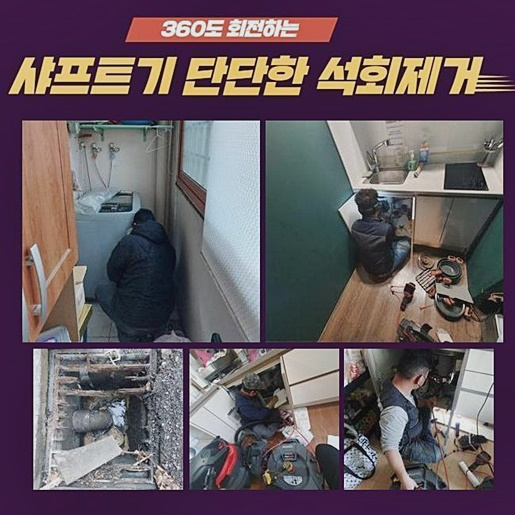
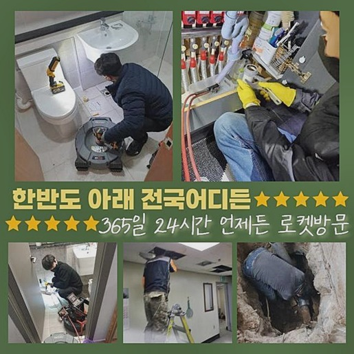
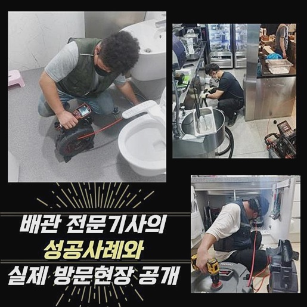
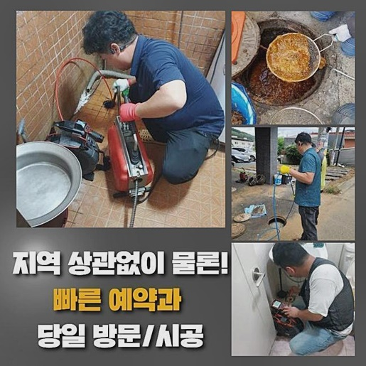
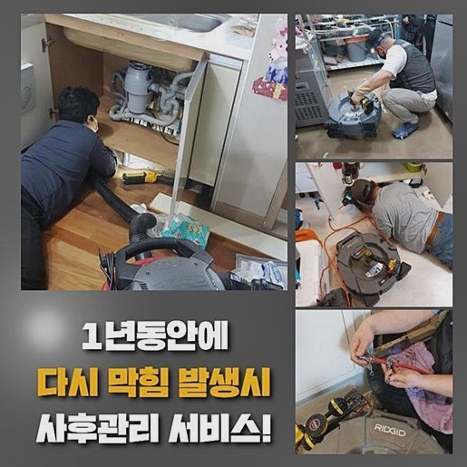
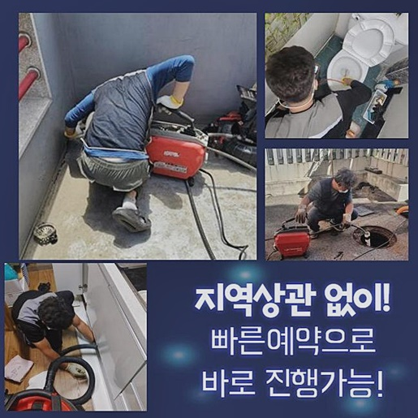

🏠 종로 서린동변기막힘 익선동 배관뚫기 설비업체
용인 변기막힘 전문 시공 후기

📋 작업 개요
- 위치: 용인
- 서비스 유형: 변기막힘, 하수구막힘, 배관막힘, 누수수리, 역류해결, 뚫는업체, 배관청소, 고압세척
- 작업 일시: 2024. 8. 2. 2:17
- 업체명: 하수구수사대 (010-5615-2118)
🔍 문제 상황
종로 서린동변기막힘 익선동 배관뚫기 설비업체
하수라인이 문제를 보이면 방치하지마시고 빨리 방안에 대해 꾀하는것이 우선입니다
이러한 문제를 방치하면 갑자기 물들이 솟구칠 수도 있고 누수되는 증상으로도 거듭되면서 수리에 방해요소가 발생됩니다
배수관에서 역류되어버린 경우일땐 어쩔방도가 없겠지만 선제적으로 예방차원에서 전문진의 도움으로 해결해 보시는 것이 우선입니다
얼마전에 찾아뵈었던 장소는 상가가 함께 있는 경우였는데요 이러한 구조적 특성을 갖추고있다면 문제발생의 가능성을 갖추고있는 경우들이 많기에 유선으로는 설명이 되는 사안이 많지않아요
위같은 상황 탓에 정확한 사태인지를 위하여 내방을 한 뒤 진단을 해보고있죠
도착뒤에 상업시설과 합쳐진 가정집 배수관이 문제를 일으키게 되고 바깥으로 새어나오는 문제까지 나타났습니다
역류들이 발생된것과 더불어 복잡성까지 결부될 시 서둘러 장비들의 사용이 필요시 되죠
때문에 이런 경우일땐 필수적으로 이런저런 문제양상을 겪은 전문진에게 의뢰를 하시는게 좋죠
내방하고서 고객의 설명까지 듣고서 배수관을 관찰했습니다
한정된 부분 외에 복합적으로 부위별로 막히게된 것이라면 진단해야하는 설비는 공용 하수라인이죠

🔎 원인 분석
💡 전문가 진단: 정밀 진단 장비를 사용하여 슬러지의 고착 여부를 판명하고 타격/세척 작업을 실시했습니다.
공동배수로를 살피기위하여 주차시설 천정부에 위치하고있던 하수관으로 가보았는데요
공용배관을 진단하여 해결해도 메인배관들과 합쳐진 관의 결함들이 잡음없이 시정될 수 있는데요
하지만 천장부분에 자리잡고있는 배관이기때문에 일련의 과정을 수행하기엔 힘들었죠
이런 경우일땐 작업대를 놓고 전문가가 올라 작업을 수행합니다
공용관로가 막히게 된 경우라면 내부쪽을 흡입한 후 청소시키는 석션기기만을 가지고서는 뚫어내는것이 쉽지않아요
샤프트로서 세척을 실시하거나 문제의 양상과 관련하여 고압분사 방법들이 요구되는데요
어떤과정이 요구되는지 안쪽을 점검하고 까닭을 알고자 내시경을 투입했습니다
내시경기기로 심층부까지 진단해보았는데 오랫동안 쌓이게된 기름성분의 이물질들이 배수길을 막게되어 거꾸로 역류되는 불상사가 발생한건데요
구간마다 빠져나가지를 못해 역시나 주거지에 이어진 가지관로로 흘러가게 해주면 역류문제는 불가피합니다
그렇기에 이 문제들을 의뢰인분에게 전달하고서 작업을 수행해주었습니다
관로가 붉게 물들어가는데 이렇게 보이게되는 까닭은 벽에 붙은 잔해가 너무 많아서 그런거에요
이물이 존재하지않는 하수도라면 붉게 보이지않고 깔끔하게 관찰되나 이렇게 잔해물이 가득하다면 영상으로 적나라하게 목격됩니다

🔧 작업 과정
저희 하수구막힘의 업체가 찾아갔던 곳의 증상들을 고쳐낼 생각으로 샤프트기를 사용해주어도 마구잡이로 삽입하는게 아니라 필히 배관 내부 하수관을 체크해보며 진행합니다
만일 과도한 힘을 줄 경우 배수시설들을 다치게하고 2차적인 피해로는 누수증세가 발발할 가능성이 높아 경험이 많은 전문인을 통하여 진행하시는 것이 좋은데요
플렉스 샤프트 내시경장비를 통해 꽤 오랫동안 분쇄시키는 수순을 밟아나갔는데요
저희전문인들이 찾아뵈었던 곳의 이물질들이 누적된 것을 넘어 굳어버린 슬러지가 다량이라서 여러가지의 단계가 필요했습니다
메인배관의 증상이 생겨날 시 크기들이 크고 기므로 각 구간에서 청소하는 과정을 속행합니다
해당 문제들을 풀어가기위하여 화장실쪽과 가깝게 있었던 창고내부쪽과도 이어져있는 내측을 청소해주는 작업들도 필요했죠
점검구들을 즉시 열어버린다면 오수들이 낙하할 불미스러운 일이 불가피하기에 비닐을 써서 보양도 빠트리지않고 실시했어요
아래쪽으로 수도가 배출되도록 연결을 해보았어요
혹시 이런 부분까지 주의하여 청소해주지 못할 시엔 뚫는것은 이뤄지겠지만 마무리들은 깔끔할 수가 없겠습니다
이러한 것도 전문가가 배양하고있는 덕목이라 판단하고 있어요
금일은 욕실내부와 합쳐진 배수관으로, 오염원이 가득했었습니다 일반적인 이물이 배수관 기능을 저해시키는게 일반적이나 큰 사이즈의 쓰레기가 문제가 되어버리기도 하죠
장애의 이유를 살폈더니 샤프트기기론 올바르게 세척하는것이 쉽지않겠단 판단이 들었는데요
이러한 때에는 알맞는 크란즐 장치를 사용하여 세척하는것이 좋습니다
차와 이어진 개체보다 컴팩트하지만 성능상의 문제는 없으니 문제양상에 알맞은 작업방식을 선정하는것 또한 전문인의 자질이라고 생각한답니다
뚫기를 이어가며 위치별로 확실하게 청소되었는지 균열들이 안보이는지 진단하고 배수테스트를 실시했습니다
저희가 달려갔던 현장의 경우 내시경으로 피해가 잠재워진건지 테스트과정으로 확인해주어야 마침내 뚫음 작업들이 이뤄졌다고 생각하시면 됩니다
최종적으로 이상징후없이 작업이 끝났죠 의뢰자께도 재발의 여지가 없는채로 작업이후의 상황을 공유해드리고
지금까지 수도의 이용이 만만치않았던 고객님이 걱정을 내려놓을거란 생각을하니 저희도 기쁜 마음이었어요


✅ 작업 완료
문제가 생겨나서 작업들을 이어갈때 여러 잔해가 배출되는데요
문제들이 외부로 드러났을때에 신속히 처리하기위하여 전문인에게 도움을 청하면 안정적으로 해결이 가능하겠으나, 등한시하는 바람에 미루게된다면 오랜 시공을 진행해줘야 할거에요
어떠한 상황들에 처해있어도 저희들은 꾸준히 안정적으로 해결해드리고 있습니다
저희전문진은 점검을 바탕으로 적합한 작업방식을 진행하니 걱정마시고 도움을 청하시면 되겠습니다
상가뿐만 아니라 가정처럼 수도사용이 요구되는 곳일 경우 어디에서든지 청소시키는 것에 집중하고있기에 언제라도지 주저없이 연락주세요!



⚠️ 베란다 누수 및 방수 관리 방법
- ✅ 비가 많이 올 때 창틀 주변이나 아래층 천장에 얼룩이 생기는지 정기적으로 확인해 보세요.
- ✅ 우수관 주변 실리콘 마감이 들뜨거나 깨진 틈새가 있는지 손상 여부를 수시로 체크하세요.
- ✅ 베란다 바닥 타일의 줄눈(메지)이 소실되면 그 틈으로 물이 침투하여 누수가 유발됩니다.
- ✅ 누수 의심 증상 발견 시 방치하면 아래층 손실이 커지므로 즉시 전문가의 진단을 받으십시오.
💡 핵심 정리
- 확실한 장비 작업(내시경 점검 및 샤프트 스케일링)으로 원인을 뿌리 뽑습니다.
- 작업 후 1년 이내에 동일한 부위 재발 시 100% 무상 A/S 서비스를 보장합니다.
- 서울 · 경기 · 인천 전 지역에 24시간 언제든 긴급 출동할 수 있도록 항시 대기 중입니다.
❓ 자주 묻는 질문 (FAQ)
🚨 용인 변기막힘 문제로 고민이신가요?
정확한 원인 진단과 확실한 시공으로 재발 없는 해결을 약속드립니다.
24시간 긴급 출동 | 서울 · 경기 · 인천 전지역 | 1년 내 재발 시 무상 A/S